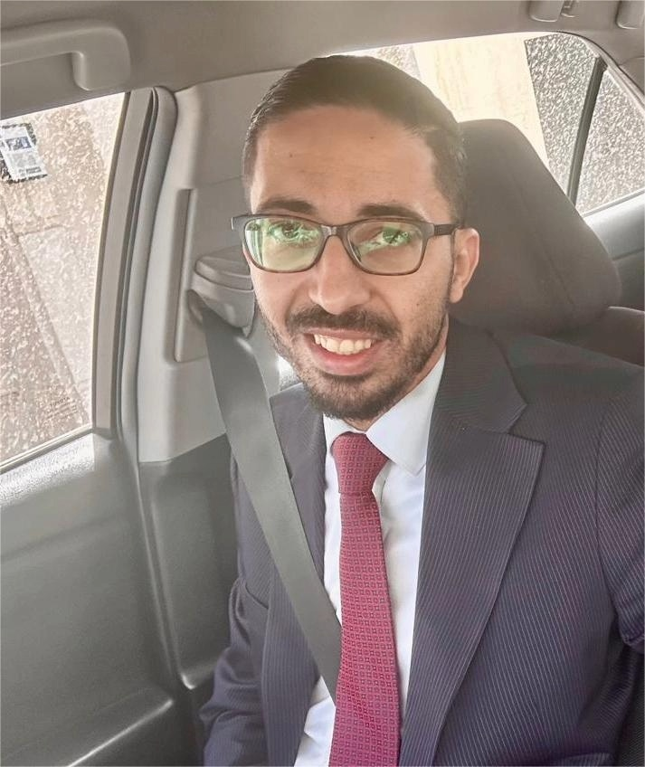

A Message From Our Team
Our program is shaped by a team of passionate educators whose shared goal is to produce outstanding pulmonologists for Jordan and the region.

"Our mission is to cultivate the next generation of exceptional pulmonologists who are clinically masterful, academically rigorous, and compassionate in their care."
Welcome to the KHCC Pulmonary Medicine Fellowship Program. Our program is built on a foundation of clinical excellence, rigorous academic standards, and hands-on procedural mastery. At KHCC, fellows are immersed in a rich environment where complex lung disease, interventional pulmonology, and critical care converge. We are committed to training physicians who are not only technically skilled but who embody the values of humanism and leadership in respiratory medicine across the region. I am proud to lead a program that places fellows at the very heart of our mission, and I look forward to welcoming the next class of dedicated physicians.

"Graduate medical education at KHCC is held to the highest international standards, because our patients and our trainees deserve nothing less."
Graduate medical education at KHCC is shaped by a commitment to international standards and institutional excellence. Our fellowship integrates structured didactic learning, multidisciplinary collaboration, and evidence-based clinical practice. Through meaningful partnerships with Thoracic Surgery, Radiology, Pathology, Rheumatology, and Sleep Medicine, we ensure each fellow receives a truly comprehensive training experience. Institutional support, mentorship, and a culture of continuous learning are the pillars that define GME at KHCC. We are proud to stand alongside Jordan University Hospital in shaping the next era of respiratory medicine education in this region.

"From day one, you are part of a team — scrubbing in on bronchoscopies, managing complex ICU patients, and building lifelong friendships with your co-fellows."
As a fellow at KHCC, you will find yourself in one of the most supportive and academically stimulating environments in the region. From day one, you are part of a close-knit team performing advanced bronchoscopies, managing complex ICU cases, and participating in weekly academic conferences that genuinely sharpen your mind. The procedural exposure here is unparalleled — EBUS, interventional pulmonology, POCUS, advanced airway management — and the mentorship from our faculty is genuine, accessible, and invested in your growth. I can say with full confidence: choosing KHCC for your fellowship is a decision you will never regret.